OBJECTIVEWhat we want to find out
- Read a WAV file and inspect it in time and in frequency; say what each spectral estimate shows.
- Choose the window and the segment length of a spectral estimate (Welch).
- Check with a spectrogram whether the signal is stationary.
- Filter in the frequency domain — band-pass, comb, Wiener — go back to time and listen.
- Recognise and remove a systematic line: the 50 Hz mains hum.
- Compare every filtered output with the clean signal, with a number (SNR) and a plot.
- Fit a model to the noise, set a detection threshold, build a Wiener filter from the data alone.
DATAThe four files
| file | content | use |
|---|---|---|
dati_rumorosi.wav | recording 1: signal + noise | the data to analyse |
segnale.wav | the noise-free signal of recording 1, same scale | only to check the filters |
dati_rumorosi_2.wav | recording 2: signal + noise | the same analysis, harder lines |
segnale_2.wav | clean signal of recording 2 | check |
- Format. 120 s, sampling rate fs = 44 100 Hz, 16-bit signed integers (−32 768 … 32 767), one channel: N = 5 292 000 samples per file, 10.6 MB.
- Frequency grid. The FFT of the whole record has bins every 1/T = 0.0083 Hz, from 0 to the Nyquist frequency fs/2 = 22 050 Hz: 2 646 001 bins.
- Scale. The noisy files peak at 29 490 (90% of full scale: a margin against clipping). The rms of the data is 13 194; the rms of the clean signal only 73: the signal power is 45 dB below the noise.
- The noise is synthetic and coloured: red (∝ f⁻²) below a knee at about 440 Hz and white above — the same knee model \(S_n = A[1 + (f_k/f)^\alpha]\) as in Lectures 10 and 12.
- A systematic effect. Both recordings contain a 50 Hz line, the mains hum: produced by the instrument, not by the source. It must be removed by every filter.
- Why audio? A WAV file is a perfect laboratory for astrophysical time series: the same tools (periodogram, Welch, STFT, Wiener) are used on detector time-ordered data, light curves and gravitational-wave strain, and here you can also hear the result.
METHODThe workflow
| step | block | method | theory |
|---|---|---|---|
| 0 read, listen, look | 0–2 | int16 → float, time plots | L7 quantisation |
| 1 periodogram & Welch | 3–6 | whole-record |FFT|², averaged windowed segments | L10 Welch |
| 2 stationarity | 7 | STFT spectrogram, line amplitude in 10 s blocks | L8 STFT |
| 3 band-pass | 8 | H = 1 in a band | L9 filtering |
| 4 comb | 9 | H = 1 around each line | — |
| 5 noise fit | 10 | least squares on log Welch | L10 knee |
| 6 Wiener | 11–12 | Φ = 1 − 1/z, threshold z* | L10 Wiener |
| 7 Whittle | 13 | exact likelihood of the periodogram | L12 Whittle |
| recording 2 | 15 | resolution, beat, filters | — |
| summary | 14, 16 | SNR table, listening | — |
X = rfft(x); f = rfftfreq(N, 1/fs)
H = ((f > 493) & (f < 814)).astype(float)
y = irfft(H * X, n=N)def snr_db(y, s): return 10 * np.log10(np.var(s) / np.var(y - s))RUNHow to run the notebook
- Google Colab: open
AstroSignal_corrected.ipynb, run Block 0 and upload the four WAV files when asked. - Locally: put the four files in a
data/folder next to the notebook (as in this folder) and run all cells; or run the plain scriptcode/lab1_analysis.py. About 40 s on a laptop. - Outputs: every figure in
figures/, the filtered recordings inout_wav/, 5 s audio clips inline.
# Block 0 — Setup: libraries, data folder, helper functions
import os
import numpy as np
import scipy.signal as sp
from scipy.io import wavfile
from scipy.fft import rfft, irfft, rfftfreq
from scipy.ndimage import median_filter
from scipy.optimize import curve_fit, minimize
import matplotlib.pyplot as plt
# Data: in Google Colab upload the four WAV files once; locally, keep them in ./data
try:
import google.colab # noqa: F401
IN_COLAB = True
except ImportError:
IN_COLAB = False
os.makedirs('data', exist_ok=True)
NAMES = ['dati_rumorosi.wav', 'segnale.wav', 'dati_rumorosi_2.wav', 'segnale_2.wav']
if IN_COLAB and not all(os.path.exists(os.path.join('data', n)) for n in NAMES):
from google.colab import files
for fn in files.upload(): # select the four .wav files
os.replace(fn, os.path.join('data', fn))
os.makedirs('figures', exist_ok=True) # every figure is also saved as PNG
os.makedirs('out_wav', exist_ok=True) # filtered recordings
plt.rcParams.update({'figure.dpi': 110, 'axes.grid': True, 'grid.alpha': 0.3})
HUM = 50.0 # mains hum [Hz]: instrumental, NOT signal
def read_wav(name):
# int16 -> float64: sums and squares of int16 overflow at 32767
fs, x = wavfile.read(os.path.join('data', name))
return fs, x.astype(np.float64)
def savefig(name):
plt.tight_layout()
plt.savefig(os.path.join('figures', name + '.png'), dpi=110)
plt.show()
def snr_db(y, s):
# signal-to-noise ratio of a filtered signal y against the clean signal s
return 10 * np.log10(np.var(s) / np.var(y - s))
def note_name(f):
# nearest equal-tempered note and its offset in cents (A4 = 440 Hz)
n = 12 * np.log2(f / 440.0)
k = int(np.round(n))
names = ['A', 'A#', 'B', 'C', 'C#', 'D', 'D#', 'E', 'F', 'F#', 'G', 'G#']
octave = 4 + (k + 9) // 12
return f"{names[k % 12]}{octave} ({100 * (n - k):+.0f} cents)"
def write_wav(name, y, fs):
# scale to full scale (arbitrary units) and save as 16-bit
wavfile.write(os.path.join('out_wav', name), fs, np.int16(y / np.abs(y).max() * 32767))
print('Colab' if IN_COLAB else 'local', '| files:', sorted(os.listdir('data')))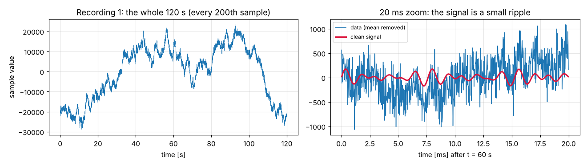
Block 1 — Read the recordings and the clean references
What it does. Reads the noisy recording and its clean signal, converts both to float64, builds the time axis t = n/fs and a 20 ms mask used for every later comparison, and prints a table of properties.
# Block 1 — Read the recordings and the clean references
fs, x = read_wav('dati_rumorosi.wav') # recording 1 (noisy)
fs_s, s = read_wav('segnale.wav') # its clean signal (only for checking)
assert fs_s == fs # do not overwrite fs with the second read
N = x.size
T = N / fs
t = np.arange(N) / fs # sample times n/fs
z = (t > 60) & (t < 60.02) # a 20 ms window used for every comparison
t_ms = (t[z] - 60) * 1e3
print(f"{'quantity':<28}{'value':>16}")
print('-' * 44)
for k, v in [('sampling rate fs [Hz]', fs), ('samples N', N), ('duration T [s]', T),
('resolution 1/T [Hz]', f'{1 / T:.4f}'), ('rms of the data', f'{x.std():.0f}'),
('peak |x| (int16 max 32767)', f'{np.abs(x).max():.0f}'), # max() needs ()
('rms of the clean signal', f'{s.std():.1f}'),
('signal / noise power [dB]', f'{10 * np.log10(s.var() / (x - s).var()):.1f}')]:
print(f"{k:<28}{v:>16}")| quantity | value | meaning |
|---|---|---|
| fs | 44 100 Hz | CD-quality sampling: Nyquist 22 050 Hz |
| N | 5 292 000 | 120 s × 44 100 |
| 1/T | 0.0083 Hz | bin width of the whole-record FFT |
| rms of the data | 13 194 | almost all noise |
| peak |x| | 29 490 | 90% of int16 full scale |
| rms of the clean signal | 73.4 | the hidden chord |
| signal / noise power | −45.1 dB | the signal power is 1/32 000 of the noise |
Block 2 — Look at the samples
# Block 2 — Look at the samples (before any processing)
fig, ax = plt.subplots(1, 2, figsize=(12, 3.4))
ax[0].plot(t[::200], x[::200], lw=0.4)
ax[0].set(xlabel='time [s]', ylabel='sample value', title='Recording 1: the whole 120 s (every 200th sample)')
ax[1].plot(t_ms, x[z] - x[z].mean(), lw=1, label='data (mean removed)')
ax[1].plot(t_ms, s[z], lw=2, color='crimson', label='clean signal')
ax[1].set(xlabel='time [ms] after t = 60 s', title='20 ms zoom: the signal is a small ripple')
ax[1].legend(fontsize=8)
savefig('b02_time_domain')Reading the plot. Left: the record wanders slowly over most of the int16 range — the signature of red noise (power concentrated at low frequency). Right: in 20 ms the clean chord (red) is a smooth periodic ripple; the data (blue) show nothing of it. Significance: in the time domain the signal is undetectable; the next blocks move to the frequency domain, where a steady tone concentrates all its power in one bin.
Hint
10 log₁₀((73.4/13194)²).Full solution
20 log₁₀(73.4/13194) = 20·(−2.255) = −45.1 dB.Hint
1/T.Full solution
1/120 = 0.00833 Hz.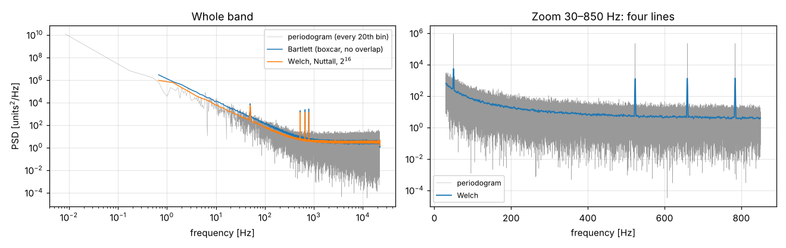
fp, P = sp.periodogram(x, fs) # = 2|X|^2/(fs N)fw, W = sp.welch(x, fs, window='nuttall', nperseg=2**16) # noverlap = L/2Block 3 — Periodogram and Welch
# Block 3 — Periodogram and Welch
fp, P = sp.periodogram(x, fs) # one-sided PSD, whole record
L = 2**16 # 1.49 s segments
fw, W = sp.welch(x, fs, window='nuttall', nperseg=L) # 50% overlap (default)
fb, B = sp.welch(x, fs, window='boxcar', nperseg=L, noverlap=0) # Bartlett
K = (N - L) // (L // 2) + 1
print(f"Welch: L = {L} samples ({L/fs:.2f} s), bins of {fs/L:.3f} Hz, K = {K} segments; Bartlett K = {N // L}")
fig, ax = plt.subplots(1, 2, figsize=(12, 3.8))
ax[0].loglog(fp[1::20], P[1::20], lw=0.3, color='0.6', label='periodogram (every 20th bin)')
ax[0].loglog(fb[1:], B[1:], lw=1, label='Bartlett (boxcar, no overlap)')
ax[0].loglog(fw[1:], W[1:], lw=1, label='Welch, Nuttall, $2^{16}$')
ax[0].set(xlabel='frequency [Hz]', ylabel='PSD [units$^2$/Hz]', title='Whole band')
ax[0].legend(fontsize=8)
band = (fp > 30) & (fp < 850)
ax[1].semilogy(fp[band], P[band], lw=0.3, color='0.6', label='periodogram')
ax[1].semilogy(fw[(fw > 30) & (fw < 850)], W[(fw > 30) & (fw < 850)], lw=1.2, label='Welch')
ax[1].set(xlabel='frequency [Hz]', title='Zoom 30–850 Hz: four lines')
ax[1].legend(fontsize=8)
savefig('b03_periodogram_welch')Reading the plot. The noise falls as f⁻² from 1 Hz to a few hundred hertz (six decades of power) and then flattens: red noise with a knee, then white. The periodogram (grey) is a thick band — its 100% scatter; Welch (orange) is a thin line through it. Four spikes: 50 Hz and three near 500–800 Hz. The Bartlett estimate (blue) lies above Welch between 50 and 1000 Hz: leakage of the rectangular window (next block).
Block 4 — Find the lines automatically and name them
What it does. Divides Welch by its running median (the local noise floor over 135 Hz), keeps the maxima more than 20 times above it, then reads the exact frequency in the periodogram and converts it to a musical note, \(n = 12\log_2(f/440\ \mathrm{Hz})\).
# Block 4 — Find the lines automatically and name them
floor = median_filter(W, size=201, mode='nearest') # local noise level (135 Hz)
peaks, _ = sp.find_peaks(W / floor, height=20)
peaks = peaks[fw[peaks] > 20]
peaks = np.union1d(peaks, [np.argmin(np.abs(fw - HUM))]) # the hum sits on a steep slope: add it
peaks = peaks[np.argsort(fw[peaks])]
print(f"{'f [Hz]':>9} {'Welch/floor':>12} {'periodogram contrast':>21} nature")
for k in peaks:
m = (fp > fw[k] - 1) & (fp < fw[k] + 1)
jj = np.flatnonzero(m)[np.argmax(P[m])] # exact periodogram bin (0.008 Hz)
ring = (np.abs(fp - fp[jj]) > 2) & (np.abs(fp - fp[jj]) < 20)
contrast_p = P[jj] / (np.median(P[ring]) / np.log(2)) # median of an exponential = ln2 x mean
kind = 'mains hum (instrument)' if abs(fw[k] - HUM) < 1 else note_name(fp[jj])
print(f"{fp[jj]:9.2f} {W[k] / floor[k]:12.0f} {contrast_p:21.0f} {kind}")
lines = [523.3, 659.3, 784.0] # C5, E5, G5: a C major chord
lines_all = [HUM] + lines| f [Hz] | Welch / floor | periodogram contrast | nature |
|---|---|---|---|
| 50.00 | 19 | 3 469 | mains hum (instrument) |
| 523.30 | 238 | 41 623 | C5 |
| 659.30 | 291 | 48 593 | E5 |
| 784.00 | 335 | 54 067 | G5 |
Significance. Recording 1 is a C major chord (C–E–G). The periodogram contrast is ~170 times the Welch contrast: averaging segments spreads a line over many bins and loses its coherent gain. The hum looks weak in Welch only because it sits on the steep red noise.
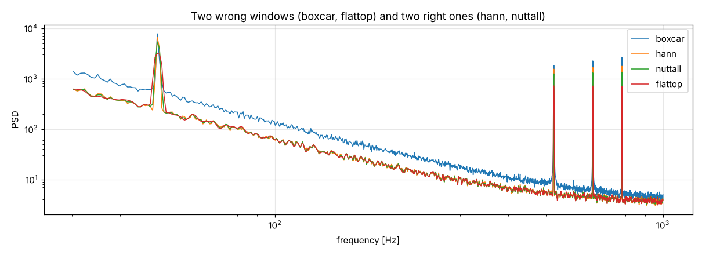
Block 5 — Which window? Leakage and line contrast
# Block 5 — Which window? Leakage and line contrast (table)
fr, Wref = sp.welch(x, fs, window='nuttall', nperseg=2**18) # reference: long Nuttall
def level(fq, Wq, lo, hi):
m = (fq > lo) & (fq < hi) & np.all(np.abs(fq[:, None] - np.array(lines_all)) > 5, axis=1)
return np.median(Wq[m])
print(f"{'window':<16}{'noise/ref 50-100 Hz':>20}{'500-1000 Hz':>13}{'contrast C5':>13}{'E5':>8}{'G5':>8}")
rows = {}
fig, ax = plt.subplots(figsize=(11, 4))
for win in ['boxcar', 'triang', 'hamming', 'hann', 'blackmanharris', 'nuttall', 'flattop']:
fq, Wq = sp.welch(x, fs, window=win, nperseg=L)
fl = median_filter(Wq, size=201, mode='nearest')
con = [Wq[np.argmin(np.abs(fq - l))] / fl[np.argmin(np.abs(fq - l))] for l in lines]
rows[win] = (level(fq, Wq, 50, 100) / level(fr, Wref, 50, 100), level(fq, Wq, 500, 1000) / level(fr, Wref, 500, 1000), *con)
print(f"{win:<16}{rows[win][0]:20.2f}{rows[win][1]:13.2f}{con[0]:13.0f}{con[1]:8.0f}{con[2]:8.0f}")
if win in ('boxcar', 'flattop', 'hann', 'nuttall'):
m = (fq > 30) & (fq < 1000)
ax.loglog(fq[m], Wq[m], lw=1, label=win)
ax.set(xlabel='frequency [Hz]', ylabel='PSD', title='Two wrong windows (boxcar, flattop) and two right ones (hann, nuttall)')
ax.legend()
savefig('b05_windows')| window | noise / reference, 50–100 Hz | 500–1000 Hz | contrast C5 | E5 | G5 |
|---|---|---|---|---|---|
| boxcar | 2.13 | 1.31 | 219 | 364 | 499 |
| triang | 1.05 | 1.01 | 314 | 412 | 495 |
| hamming | 1.08 | 1.01 | 309 | 402 | 482 |
| hann | 1.06 | 1.01 | 292 | 373 | 439 |
| blackmanharris | 1.05 | 1.00 | 235 | 286 | 330 |
| nuttall | 1.05 | 1.00 | 238 | 291 | 335 |
| flattop | 1.07 | 1.00 | 139 | 158 | 179 |
Reading the table. Reference: Nuttall with 2¹⁸ samples. The rectangular window doubles the apparent noise at 50–100 Hz: its sidelobes fall only 6 dB/octave, slower than the f⁻² noise, so power from below leaks upwards. Flattop has a main lobe 3.8 bins wide: half the contrast and poor resolution (it is meant for measuring amplitudes). Hann (−31 dB, 18 dB/oct) and Nuttall (−98 dB) are safe.
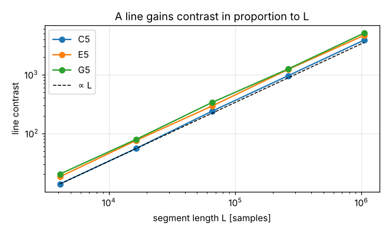
Block 6 — How long should the segments be?
# Block 6 — How long should the segments be? (table)
print(f"{'L':>9} {'duration [s]':>13} {'bin [Hz]':>9} {'K':>5} {'contrast C5':>12} {'E5':>8} {'G5':>8}")
Ls, cons = [], []
for q in [12, 14, 16, 18, 20]:
Lq = 2**q
fq, Wq = sp.welch(x, fs, window='nuttall', nperseg=Lq)
fl = median_filter(Wq, size=max(21, int(135 / (fs / Lq)) | 1), mode='nearest')
con = [Wq[np.argmin(np.abs(fq - l))] / fl[np.argmin(np.abs(fq - l))] for l in lines]
Ls.append(Lq); cons.append(con)
print(f"{Lq:9d} {Lq/fs:13.2f} {fs/Lq:9.3f} {(N - Lq)//(Lq//2) + 1:5d} {con[0]:12.0f} {con[1]:8.0f} {con[2]:8.0f}")
plt.figure(figsize=(6, 3.6))
plt.loglog(Ls, np.array(cons), 'o-')
plt.loglog(Ls, cons[0][0] * np.array(Ls) / Ls[0], 'k--', lw=1, label='∝ L')
plt.xlabel('segment length L [samples]'); plt.ylabel('line contrast'); plt.legend(['C5', 'E5', 'G5', '∝ L'])
plt.title('A line gains contrast in proportion to L')
savefig('b06_contrast_vs_L')| L | duration | bin | K | contrast C5 | E5 | G5 |
|---|---|---|---|---|---|---|
| 2¹² | 0.09 s | 10.8 Hz | 2582 | 14 | 18 | 20 |
| 2¹⁴ | 0.37 s | 2.69 Hz | 644 | 55 | 75 | 79 |
| 2¹⁶ | 1.49 s | 0.67 Hz | 160 | 238 | 291 | 335 |
| 2¹⁸ | 5.94 s | 0.17 Hz | 39 | 954 | 1221 | 1242 |
| 2²⁰ | 23.8 s | 0.04 Hz | 9 | 3860 | 4644 | 5083 |
Significance. A line puts its power in one bin whose width is fs/L, while the noise per bin is fixed: contrast ∝ L. But the variance of the continuum ∝ 1/K = L/N. Choose L long enough for the lines to stand out and for the closest pair to separate, and short enough to keep K ≳ 50 for the noise.
Hint
(5292000 − 65536)/32768 = 159.5.Full solution
⌊159.5⌋ + 1 = 160.Hint
1/√160.Full solution
0.079: about 8%, against 100% for the periodogram.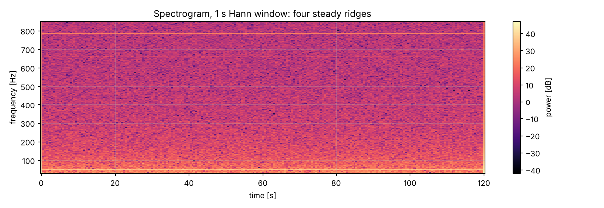
A = 2 * np.abs(np.sum(xb * np.exp(-2j*np.pi*fl*tb))) / xb.sizeBlock 7 — Spectrogram and amplitude in 10 s blocks
# Block 7 — Is the signal stationary? Spectrogram and amplitude in 10 s blocks
fq, tt, Z = sp.stft(x, fs, window='hann', nperseg=fs, noverlap=fs // 2) # 1 s window
band = (fq > 30) & (fq < 850)
plt.figure(figsize=(11, 3.8))
plt.pcolormesh(tt, fq[band], 10 * np.log10(np.abs(Z[band])**2 + 1e-12), shading='auto', cmap='magma')
plt.colorbar(label='power [dB]')
plt.xlabel('time [s]'); plt.ylabel('frequency [Hz]'); plt.title('Spectrogram, 1 s Hann window: four steady ridges')
savefig('b07_spectrogram')
print(f"{'line [Hz]':>10} {'mean amplitude':>15} {'std':>7} {'std/mean':>9}")
blk = int(10 * fs)
for fl in lines_all:
amps = [2 * np.abs(np.sum(x[i:i+blk] * np.exp(-2j * np.pi * fl * t[i:i+blk]))) / blk for i in range(0, N - blk + 1, blk)]
print(f"{fl:10.1f} {np.mean(amps):15.1f} {np.std(amps):7.1f} {np.std(amps)/np.mean(amps):9.1%}")| line | mean amplitude | std | std / mean |
|---|---|---|---|
| 50.0 Hz (hum) | 120.2 | 7.7 | 6.4% |
| 523.3 Hz | 60.1 | 1.1 | 1.8% |
| 659.3 Hz | 60.0 | 0.8 | 1.3% |
| 784.0 Hz | 60.0 | 0.8 | 1.4% |
Reading the results. The three notes have equal amplitude (60) and vary by less than 2% between blocks — the scatter expected from the noise in each block. The hum is twice as strong (120) and scatters more because it sits on the much stronger red noise at 50 Hz. Significance: a stationary chord justifies whole-record filters; the window (1 s → 1 Hz resolution) separates lines 125 Hz apart easily.
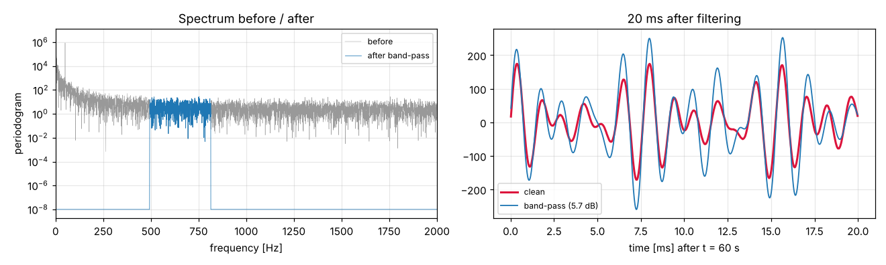
Block 8 — Band-pass by eye
# Block 8 — Filtering in Fourier space; band-pass by eye (before / after)
f = rfftfreq(N, 1 / fs)
X = rfft(x)
results = {} # name -> (filter H, output y)
def apply(H, name):
y = irfft(H * X, n=N) # n=N: needed for odd N
results[name] = (H, y)
return y
y_bp = apply(((f > 493) & (f < 814)).astype(float), 'band-pass 493–814 Hz')
y_bp20 = apply(((f > 20) & (f < 814)).astype(float), 'band-pass 20–814 Hz (hum kept)')
fig, ax = plt.subplots(1, 2, figsize=(12, 3.6))
Pb = np.abs(rfft(y_bp))**2 * 2 / (fs * N)
ax[0].semilogy(f[::50], (np.abs(X)**2 * 2 / (fs * N))[::50], lw=0.3, color='0.6', label='before')
ax[0].semilogy(f[::50], Pb[::50] + 1e-8, lw=0.5, label='after band-pass')
ax[0].set(xlim=(0, 2000), xlabel='frequency [Hz]', ylabel='periodogram', title='Spectrum before / after')
ax[0].legend(fontsize=8)
ax[1].plot(t_ms, s[z], color='crimson', lw=2, label='clean')
ax[1].plot(t_ms, y_bp[z], lw=1.2, label=f'band-pass ({snr_db(y_bp, s):.1f} dB)')
ax[1].set(xlabel='time [ms] after t = 60 s', title='20 ms after filtering'); ax[1].legend(fontsize=8)
savefig('b08_bandpass')
for k in results:
print(f"{k:<34} SNR = {snr_db(results[k][1], s):6.1f} dB")| filter | SNR | what you hear |
|---|---|---|
| band 493–814 Hz | +5.7 dB | the chord, with hiss |
| band 20–814 Hz | −8.5 dB | hum and rumble: the low frequencies are back |
Reading the plot. After the filter, only the band 493–814 Hz survives (blue). In time, the output follows the clean signal but wobbles around it: the white noise inside the 321 Hz band is still there. A low-pass at 4 kHz would do nothing: it keeps exactly the low frequencies where the noise lives.
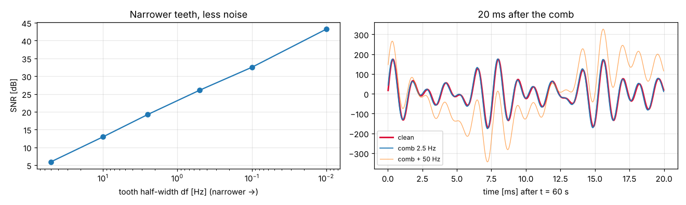
Block 9 — A comb around the lines
# Block 9 — A comb around the lines: width of the teeth (table + plot)
def comb(centres, df):
H = np.zeros(f.size)
for fl in centres:
H[np.abs(f - fl) < df] = 1.0
return H
print(f"{'half-width df [Hz]':>18} {'bins kept':>10} {'SNR [dB]':>9}")
dfs = [50, 10, 2.5, 0.5, 0.1, 0.01]
snrs = []
for df in dfs:
H = comb(lines, df)
y = irfft(H * X, n=N)
snrs.append(snr_db(y, s))
print(f"{df:18g} {int(H.sum()):10d} {snrs[-1]:9.1f}")
y_comb = apply(comb(lines, 2.5), 'comb, 2.5 Hz teeth')
y_combhum = apply(comb(lines_all, 2.5), 'comb 2.5 Hz + tooth at 50 Hz')
print(f"comb with a tooth at 50 Hz: SNR = {snr_db(y_combhum, s):.1f} dB (the hum comes back)")
fig, ax = plt.subplots(1, 2, figsize=(12, 3.6))
ax[0].semilogx(dfs, snrs, 'o-'); ax[0].invert_xaxis()
ax[0].set(xlabel='tooth half-width df [Hz] (narrower →)', ylabel='SNR [dB]', title='Narrower teeth, less noise')
ax[1].plot(t_ms, s[z], color='crimson', lw=2, label='clean')
ax[1].plot(t_ms, y_comb[z], lw=1.2, label='comb 2.5 Hz')
ax[1].plot(t_ms, y_combhum[z], lw=0.8, alpha=0.7, label='comb + 50 Hz')
ax[1].set(xlabel='time [ms] after t = 60 s', title='20 ms after the comb'); ax[1].legend(fontsize=8)
savefig('b09_comb')| half-width δf | bins kept | SNR |
|---|---|---|
| 50 Hz | 35 998 | 5.9 dB |
| 10 Hz | 7 197 | 12.9 dB |
| 2.5 Hz | 1 797 | 19.2 dB |
| 0.5 Hz | 357 | 26.1 dB |
| 0.1 Hz | 71 | 32.5 dB |
| 0.01 Hz | 9 | 43.2 dB |
| 2.5 Hz + tooth at 50 Hz | 2 396 | −2.0 dB |
Significance. The noise passed is proportional to the number of bins kept: every factor 5 in width is 7 dB in SNR (10 log₁₀ 5). The limit is 1/T = 0.008 Hz, one bin per line — possible only because the lines are stationary and their frequencies are known that well. A tooth at 50 Hz brings back the hum, twice as loud as each note.
Hint
10 log₁₀ 5.Full solution
6.99 dB: compare 50 → 10 Hz (5.9 → 12.9 dB).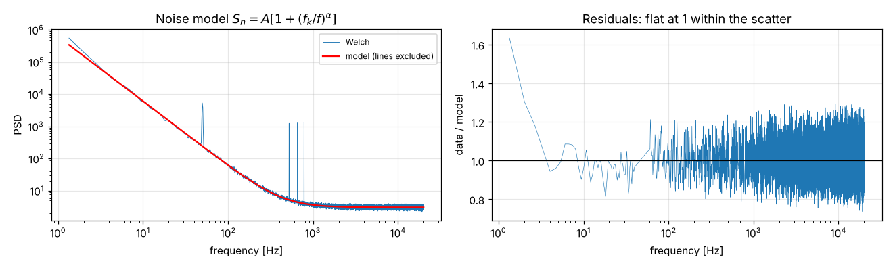
np.log1p is accurate also when (fk/f)α ≪ 1.def logS(f, lA, lfk, alpha): return lA + np.log1p((np.exp(lfk)/f)**alpha)Block 10 — Fit the noise spectrum
# Block 10 — Fit the noise spectrum (three parameters, in logarithms)
def logS(f, lA, lfk, alpha): # ln S_n, with A = e^lA, fk = e^lfk
return lA + np.log1p((np.exp(lfk) / f)**alpha)
sel = (fw >= 1) & (fw <= 20000)
far = np.all(np.abs(fw[:, None] - np.array(lines_all)) > 10, axis=1)
p_all, _ = curve_fit(logS, fw[sel], np.log(W[sel]), p0=[np.log(10), np.log(300), 1.5])
p, cov = curve_fit(logS, fw[sel & far], np.log(W[sel & far]), p0=[np.log(10), np.log(300), 1.5])
err = np.sqrt(np.diag(cov))
# log-binned version: equal weight per decade
edges = np.logspace(0, np.log10(20000), 61)
idx = np.digitize(fw, edges)
fb_, Wb_ = [], []
for i in range(1, 61):
m = (idx == i) & sel & far
if m.sum():
fb_.append(np.exp(np.mean(np.log(fw[m])))); Wb_.append(np.exp(np.mean(np.log(W[m]))))
p_bin, _ = curve_fit(logS, np.array(fb_), np.log(Wb_), p0=p)
print(f"{'fit':<32}{'A':>8}{'fk [Hz]':>10}{'alpha':>8}")
for name, q in [('all points', p_all), ('lines excluded', p), ('log bins, lines excluded', p_bin)]:
print(f"{name:<32}{np.exp(q[0]):8.3f}{np.exp(q[1]):10.1f}{q[2]:8.3f}")
print(f"{'generator (truth)':<32}{'':>8}{440.0:10.1f}{2.0:8.3f}")
print(f"1-sigma errors (lines excluded): ln A ±{err[0]:.4f}, ln fk ±{err[1]:.4f}, alpha ±{err[2]:.4f} (statistical only)")
resid = np.log(W[sel & far]) - logS(fw[sel & far], *p)
print(f"rms of the log residuals: {resid.std():.3f}")
fig, ax = plt.subplots(1, 2, figsize=(12, 3.6))
ax[0].loglog(fw[sel], W[sel], lw=0.6, label='Welch')
ax[0].loglog(fw[sel], np.exp(logS(fw[sel], *p)), 'r', lw=1.5, label='model (lines excluded)')
ax[0].set(xlabel='frequency [Hz]', ylabel='PSD', title='Noise model $S_n=A[1+(f_k/f)^α]$'); ax[0].legend(fontsize=8)
ax[1].semilogx(fw[sel & far], W[sel & far] / np.exp(logS(fw[sel & far], *p)), lw=0.4)
ax[1].axhline(1, color='k', lw=0.8)
ax[1].set(xlabel='frequency [Hz]', ylabel='data / model', title='Residuals: flat at 1 within the scatter')
savefig('b10_noise_fit')| fit | A | fk [Hz] | α |
|---|---|---|---|
| all points | 3.072 | 457.3 | 1.983 |
| lines excluded | 3.073 | 439.4 | 2.007 |
| log bins, lines excluded | 3.111 | 420.6 | 2.041 |
| generator (truth) | — | 440 | 2 |
Reading the results. With the lines masked the fit recovers the generator to 0.1% in fk and 0.4% in α; the lines bias it a little (457 Hz). The residual plot is flat at 1 (rms of the log residuals 0.079, i.e. the 1/√K scatter), with larger excursions below 10 Hz where few Welch bins exist. Fitting log-binned averages weights each decade equally and moves the parameters by a few per cent. The formal 1σ errors are tiny (±0.003 in α): the real uncertainty is in the choice of weighting.
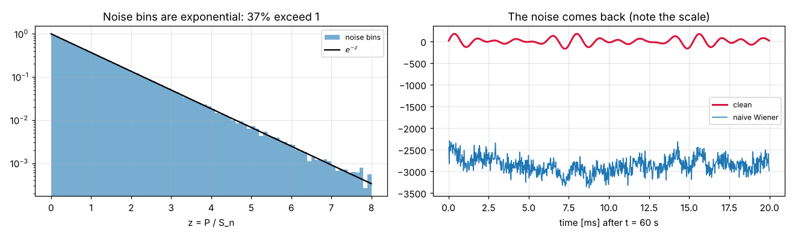
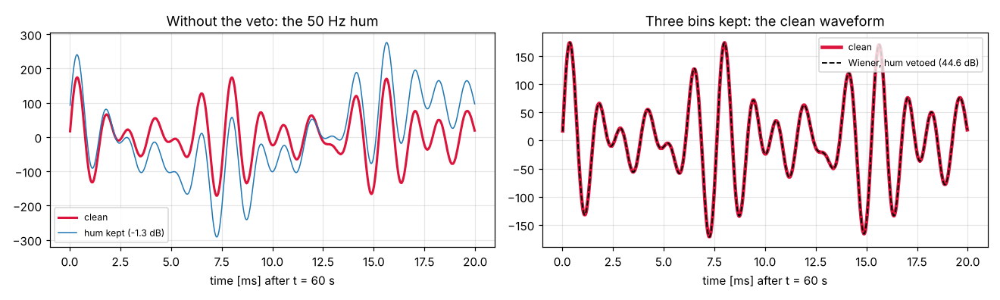
Pk = np.abs(X)**2 * 2 / (fs * N)
z = Pk / Sn; phi = np.clip(1 - 1/z, 0, 1)Block 11 — The naive Wiener filter
# Block 11 — Wiener filter, naive version (every bin)
Pk = np.abs(X)**2 * 2 / (fs * N) # periodogram in density units (= sp.periodogram)
Sn = np.exp(logS(np.maximum(f, 1e-3), *p)) # noise model at every frequency
z_snr = Pk / Sn # how many times the data exceed the noise
phi = np.clip(1 - 1 / z_snr, 0, 1) # Wiener weight Phi = 1 - 1/z
y_naive = apply(phi, 'Wiener, naive (all bins)')
noise_bins = (f > 20) & np.all(np.abs(f[:, None] - np.array(lines_all)) > 2, axis=1)
print(f"fraction of noise-only bins with z > 1: {np.mean(z_snr[noise_bins] > 1):.3f} (theory e^-1 = {np.exp(-1):.3f})")
print(f"SNR of the naive Wiener output: {snr_db(y_naive, s):.1f} dB")
fig, ax = plt.subplots(1, 2, figsize=(12, 3.6))
zz = z_snr[noise_bins][::7]
ax[0].hist(zz, bins=np.linspace(0, 8, 81), density=True, alpha=0.6, label='noise bins')
ax[0].plot(np.linspace(0, 8, 200), np.exp(-np.linspace(0, 8, 200)), 'k', label='$e^{-z}$')
ax[0].set(yscale='log', xlabel='z = P / S_n', title='Noise bins are exponential: 37% exceed 1'); ax[0].legend(fontsize=8)
ax[1].plot(t_ms, s[z], color='crimson', lw=2, label='clean')
ax[1].plot(t_ms, y_naive[z], lw=1, label='naive Wiener')
ax[1].set(xlabel='time [ms] after t = 60 s', title='The noise comes back (note the scale)'); ax[1].legend(fontsize=8)
savefig('b11_wiener_naive')Reading the results. In a noise-only bin z is exponential: P(z > 1) = e−1 = 0.368 (measured 0.369). The naive filter keeps 976 472 bins, a third of the spectrum, including the huge low-frequency noise: SNR −37.5 dB, the output is offset by −3000 and noisy. P − Sn in a single bin is not an estimate of Ss: it fluctuates as much as the noise.
zstar = np.log(np.sum(f > 20) / 0.01)Block 12 — Wiener on the detected lines
# Block 12 — Wiener filter on the detected lines (threshold z*, hum removed)
M = np.sum(f > 20) # bins tested
zstar = np.log(M / 0.01) # one false line in 100 recordings
det_all = (z_snr > zstar) & (f > 20)
det = det_all & (np.abs(f - HUM) > 0.5) # veto the mains hum
print(f"M = {M} bins tested, z* = ln(M/0.01) = {zstar:.1f}; largest noise-only z = {z_snr[noise_bins].max():.1f}")
print(f"{'f [Hz]':>9} {'z':>9} {'amplitude 2|X|/N':>17} nature")
for k in np.flatnonzero(det_all):
kind = 'mains hum: vetoed' if abs(f[k] - HUM) < 1 else note_name(f[k])
print(f"{f[k]:9.3f} {z_snr[k]:9.0f} {2 * np.abs(X[k]) / N:17.1f} {kind}")
y_wien = apply(np.where(det, phi, 0.0), 'Wiener, detected lines (hum vetoed)')
y_wienhum = apply(np.where(det_all, phi, 0.0), 'Wiener, detected lines (hum kept)')
fig, ax = plt.subplots(1, 2, figsize=(12, 3.6))
ax[0].plot(t_ms, s[z], color='crimson', lw=2, label='clean')
ax[0].plot(t_ms, y_wienhum[z], lw=1, label=f'hum kept ({snr_db(y_wienhum, s):.1f} dB)')
ax[0].set(xlabel='time [ms] after t = 60 s', title='Without the veto: the 50 Hz hum'); ax[0].legend(fontsize=8)
ax[1].plot(t_ms, s[z], color='crimson', lw=3, label='clean')
ax[1].plot(t_ms, y_wien[z], 'k--', lw=1.2, label=f'Wiener, hum vetoed ({snr_db(y_wien, s):.1f} dB)')
ax[1].set(xlabel='time [ms] after t = 60 s', title='Three bins kept: the clean waveform'); ax[1].legend(fontsize=8)
savefig('b12_wiener_lines')| f [Hz] | z | amplitude 2|X|/N | decision |
|---|---|---|---|
| 50.000 | 3 544 | 120.1 | mains hum: vetoed |
| 523.300 | 41 349 | 60.1 | C5: kept |
| 659.300 | 48 722 | 60.0 | E5: kept |
| 784.000 | 53 536 | 60.0 | G5: kept |
Significance. Four bins pass the threshold. Without the veto the hum dominates (SNR −1.3 dB); with it, three bins are kept and the SNR is +44.6 dB: the output is the clean chord. The amplitudes are shrunk by 1/z ≈ 10⁻⁴: Wiener trades a tiny bias for much less noise. A detected line is not necessarily signal — knowing the instrument decides.
Hint
z is exponential with mean 1.Full solution
e⁻¹ = 0.368.Hint
ln(M/p).Full solution
ln(2.64×10⁸) = 19.39.nll = lambda q: np.sum(np.log(S(q)) + Ps / S(q))Block 13 — Whittle fit
# Block 13 — Whittle fit of the noise on the periodogram
def whittle(mask, start):
fs_, Ps = f[mask], Pk[mask]
def nll(q):
S = np.exp(logS(fs_, *q))
return np.sum(np.log(S) + Ps / S)
return minimize(nll, start, method='Nelder-Mead', options=dict(xatol=1e-6, fatol=1e-3, maxiter=2000)).x
base = (f >= 1) & (f <= 20000)
far2 = np.all(np.abs(f[:, None] - np.array(lines_all)) > 2, axis=1)
q_all = whittle(base, p)
q_far = whittle(base & far2, p)
print(f"{'estimator':<40}{'A':>8}{'fk [Hz]':>10}{'alpha':>8}")
for name, q in [('least squares on log Welch (lines out)', p), ('Whittle, all bins', q_all),
('Whittle, lines excluded', q_far)]:
print(f"{name:<40}{np.exp(q[0]):8.3f}{np.exp(q[1]):10.1f}{q[2]:8.3f}")
print(f"{'generator (truth)':<40}{'':>8}{440.0:10.1f}{2.0:8.3f}")| estimator | A | fk [Hz] | α |
|---|---|---|---|
| least squares on log Welch | 3.073 | 439.4 | 2.007 |
| Whittle, all bins | 2.977 | 936.4 | 1.604 |
| Whittle, lines excluded (±2 Hz) | 3.078 | 442.7 | 1.994 |
| truth | — | 440 | 2 |
Significance. With all bins the four lines (P/S up to 5×10⁴) drag the fit far away: fk doubles. Masking ±2 Hz around them gives the best estimate of all (α = 1.994). Rule: Welch first to look and mask, Whittle for the parameters.
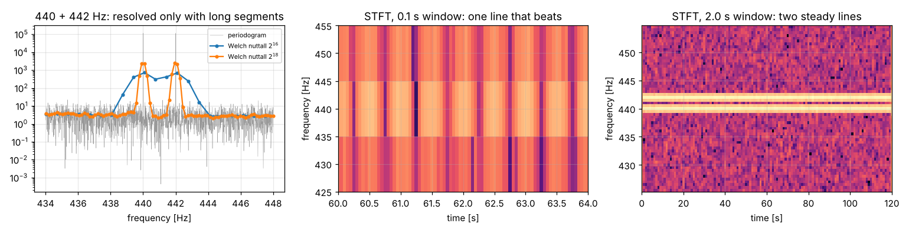
Block 15 — Recording 2
# Block 15 — Recording 2: two lines 2 Hz apart (resolution, beat, filters)
fs2, x2 = read_wav('dati_rumorosi_2.wav')
_, s2 = read_wav('segnale_2.wav')
N2 = x2.size; t2 = np.arange(N2) / fs2
f2 = rfftfreq(N2, 1 / fs2); X2 = rfft(x2)
lines2 = [440.0, 442.0, 880.0]
lines2_all = [HUM] + lines2
# resolving 440 and 442 Hz: dip between the peaks / smaller peak
print(f"{'window, L':<22}{'bin [Hz]':>9}{'dip/peak 440-442':>18}")
fig, ax = plt.subplots(1, 3, figsize=(14, 3.6))
fp2, P2 = sp.periodogram(x2, fs2)
m = (fp2 > 434) & (fp2 < 448)
ax[0].semilogy(fp2[m], P2[m], lw=0.3, color='0.6', label='periodogram')
for win, q in [('nuttall', 16), ('flattop', 16), ('nuttall', 17), ('nuttall', 18)]:
fq, Wq = sp.welch(x2, fs2, window=win, nperseg=2**q)
mm = (fq > 434) & (fq < 448)
i1, i2 = np.argmin(np.abs(fq - 440)), np.argmin(np.abs(fq - 442))
dip = Wq[i1:i2 + 1].min() / min(Wq[i1], Wq[i2])
print(f"{win + ', 2^' + str(q):<22}{fs2 / 2**q:9.3f}{dip:18.2f}")
if win == 'nuttall' and q in (16, 18):
ax[0].semilogy(fq[mm], Wq[mm], 'o-', ms=3, label=f'Welch nuttall $2^{{{q}}}$')
ax[0].set(xlabel='frequency [Hz]', title='440 + 442 Hz: resolved only with long segments'); ax[0].legend(fontsize=7)
for a, Lsec in zip(ax[1:], [0.1, 2.0]):
nps = int(Lsec * fs2)
fq, tt, Zq = sp.stft(x2, fs2, window='hann', nperseg=nps, noverlap=nps // 2)
bnd = (fq > 425) & (fq < 455)
a.pcolormesh(tt, fq[bnd], 10 * np.log10(np.abs(Zq[bnd])**2 + 1e-12), shading='auto', cmap='magma')
a.set(xlim=(60, 64) if Lsec < 1 else (0, 120), xlabel='time [s]', ylabel='frequency [Hz]',
title=f'STFT, {Lsec} s window: ' + ('one line that beats' if Lsec < 1 else 'two steady lines'))
pw = (np.abs(Zq[(fq > 436) & (fq < 446)])**2).sum(0)[2:-2]
print(f"STFT {Lsec} s: modulation depth of the 436-446 Hz power = {(pw.max() - pw.min()) / (pw.max() + pw.min()):.2f}")
savefig('b15_rec2_resolution')
# noise fit, detection and filters on recording 2
fw2, W2 = sp.welch(x2, fs2, window='nuttall', nperseg=2**16)
sel2 = (fw2 >= 1) & (fw2 <= 20000) & np.all(np.abs(fw2[:, None] - np.array(lines2_all)) > 10, axis=1)
p2, _ = curve_fit(logS, fw2[sel2], np.log(W2[sel2]), p0=[np.log(10), np.log(300), 1.5])
print(f"noise fit, recording 2: A = {np.exp(p2[0]):.2f}, fk = {np.exp(p2[1]):.1f} Hz, alpha = {p2[2]:.3f}")
Pk2 = np.abs(X2)**2 * 2 / (fs2 * N2)
z2 = Pk2 / np.exp(logS(np.maximum(f2, 1e-3), *p2))
phi2 = np.clip(1 - 1 / z2, 0, 1)
det2 = (z2 > np.log(np.sum(f2 > 20) / 0.01)) & (f2 > 20) & (np.abs(f2 - HUM) > 0.5)
print('detected lines [Hz]:', ', '.join(f'{v:.3f} ({note_name(v)})' for v in f2[det2]))
comb2 = np.zeros(f2.size)
for fl in lines2:
comb2[np.abs(f2 - fl) < 2.5] = 1.0
res2 = {'band-pass 400–920 Hz': ((f2 > 400) & (f2 < 920)).astype(float),
'comb 2.5 Hz (one band for 440+442)': comb2,
'Wiener, detected lines (hum vetoed)': np.where(det2, phi2, 0.0)}
zz2 = (t2 > 60) & (t2 < 60.02)
fig, ax = plt.subplots(1, 3, figsize=(14, 3.4), sharey=True)
print(f"{'filter (recording 2)':<40}{'SNR [dB]':>10}")
for a, (name, H) in zip(ax, res2.items()):
y2 = irfft(H * X2, n=N2)
res2[name] = (H, y2)
print(f"{name:<40}{snr_db(y2, s2):10.1f}")
a.plot((t2[zz2] - 60) * 1e3, s2[zz2], color='crimson', lw=2, label='clean')
a.plot((t2[zz2] - 60) * 1e3, y2[zz2], lw=1, label='filtered')
a.set(title=f'{name}', xlabel='time [ms] after 60 s'); a.legend(fontsize=7)
savefig('b15_rec2_filters')
write_wav('rec2_noisy.wav', x2 - x2.mean(), fs2)
write_wav('rec2_comb.wav', res2['comb 2.5 Hz (one band for 440+442)'][1], fs2)| window, L | bin | dip / peak between 440 and 442 Hz |
|---|---|---|
| nuttall, 2¹⁶ (1.5 s) | 0.67 Hz | 0.45 (barely resolved) |
| flattop, 2¹⁶ | 0.67 Hz | 1.00 (not resolved) |
| nuttall, 2¹⁷ (3 s) | 0.34 Hz | 0.00 (resolved) |
| nuttall, 2¹⁸ (6 s) | 0.17 Hz | 0.00 |
| quantity | value |
|---|---|
| STFT 0.1 s: modulation depth of the 436–446 Hz power | 1.00 (a full beat) |
| STFT 2 s: modulation depth | 0.15 (steady) |
| noise fit | A = 1.64, fk = 437.9 Hz, α = 2.017 |
| detected lines | 440.000 (A4), 442.000 (A4 + 8 cents), 880.000 (A5) |
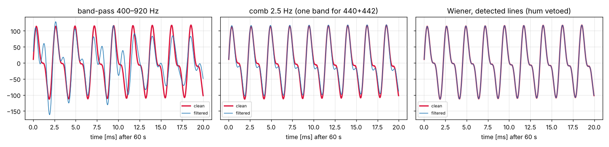
| filter (recording 2) | SNR |
|---|---|
| band-pass 400–920 Hz | 3.4 dB |
| comb 2.5 Hz (one band covers 440 and 442) | 19.6 dB |
| Wiener, detected lines, hum vetoed | 41.8 dB |
Significance. With δf = 2.5 Hz the teeth at 440 and 442 Hz merge into one band 437.5–444.5 Hz that keeps both: you hear a 441 Hz tone swelling and fading twice per second, plus the octave. The Wiener filter on detected lines again returns the clean signal.
Hint
Beat frequency |f₂ − f₁|.Full solution
2 Hz: twice per second.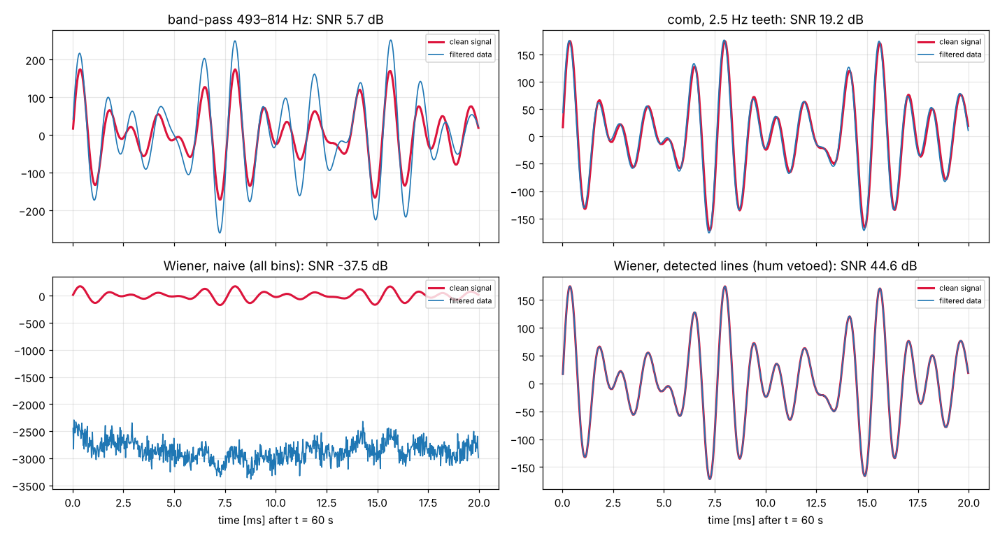
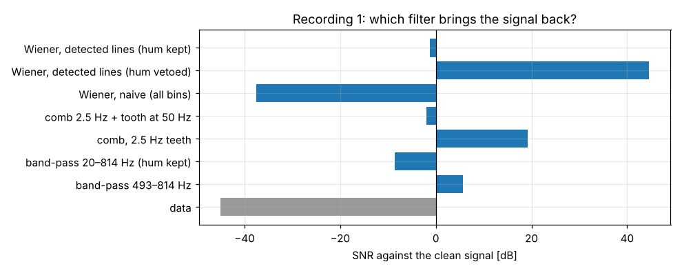
Block 14 — Summary table
# Block 14 — Summary of all filters on recording 1 (table, plots, listening)
print(f"{'filter':<40}{'bins kept':>10}{'SNR [dB]':>10}{'residual rms':>14}")
print('-' * 74)
print(f"{'no filter (the data)':<40}{N//2+1:>10}{snr_db(x - x.mean(), s):10.1f}{np.std(x - s):14.1f}")
for name, (H, y) in results.items():
print(f"{name:<40}{int(np.count_nonzero(H)):>10}{snr_db(y, s):10.1f}{np.std(y - s):14.1f}")
show = ['band-pass 493–814 Hz', 'comb, 2.5 Hz teeth', 'Wiener, naive (all bins)', 'Wiener, detected lines (hum vetoed)']
fig, axes = plt.subplots(2, 2, figsize=(13, 7), sharex=True)
for ax, name in zip(axes.flat, show):
y = results[name][1]
ax.plot(t_ms, s[z], color='crimson', lw=2, label='clean signal')
ax.plot(t_ms, y[z], lw=1.1, label='filtered data')
ax.set_title(f'{name}: SNR {snr_db(y, s):.1f} dB'); ax.legend(fontsize=7, loc='upper right')
for ax in axes[1]: ax.set_xlabel('time [ms] after t = 60 s')
savefig('b14_filters_2x2')
plt.figure(figsize=(9, 3.6))
names = ['data'] + list(results)
vals = [snr_db(x - x.mean(), s)] + [snr_db(results[k][1], s) for k in results]
plt.barh(names, vals, color=['0.6'] + ['tab:blue'] * len(results)); plt.axvline(0, color='k', lw=0.8)
plt.xlabel('SNR against the clean signal [dB]'); plt.title('Recording 1: which filter brings the signal back?')
savefig('b14_snr_bar')
# save full recordings and 5 s clips (60–65 s) to listen to
clip = slice(int(60 * fs), int(65 * fs))
write_wav('rec1_noisy.wav', x - x.mean(), fs); write_wav('rec1_clean.wav', s, fs)
for k, name in enumerate(show, 1):
write_wav(f'rec1_filter{k}.wav', results[name][1], fs)
if IN_COLAB or True:
from IPython.display import Audio, display
for title, y in [('noisy data', x - x.mean()), ('clean signal', s)] + [(n, results[n][1]) for n in show]:
print(title); display(Audio(y[clip], rate=fs, normalize=True)) # only 5 s: a light notebook| filter | bins kept | SNR [dB] | residual rms |
|---|---|---|---|
| no filter (data) | 2 646 001 | −45.1 | 13 194 |
| band-pass 493–814 Hz | 38 519 | 5.7 | 38.2 |
| band-pass 20–814 Hz | 95 279 | −8.5 | 196.3 |
| comb, 2.5 Hz teeth | 1 797 | 19.2 | 8.0 |
| comb + tooth at 50 Hz | 2 396 | −2.0 | 92.1 |
| Wiener, naive | 976 472 | −37.5 | 5 521.7 |
| Wiener, detected lines, hum kept | 4 | −1.3 | 84.9 |
| Wiener, detected lines, hum vetoed | 3 | 44.6 | 0.4 |
RESULTSConclusions
- Lines vs noise. A signal 45 dB below the noise stands 4–5×10⁴ above it in single periodogram bins: steady tones put all their power in one bin of 0.008 Hz.
- Welch shows the noise, the periodogram the lines. Averaging 160 segments reduces the scatter to 8% but the lines to 240–340; the window matters for a red spectrum (rectangular: ×2 noise at 50–100 Hz).
- Resolution is a choice. 440 and 442 Hz merge with 1.5 s segments and separate with 3 s; in a spectrogram they are a 2 Hz beat (0.1 s) or two lines (2 s).
- Knowing where the noise is pays. A band-pass by eye brings the chord back (+5.7 dB); a comb with 2.5 Hz teeth +19 dB; a low-pass would do nothing.
- Systematics. The 50 Hz hum is detected like a signal (z = 3544) and must be vetoed by hand.
- Wiener needs a good Ss. From single bins it keeps 37% of the noise; from the detected lines it returns the clean signal. The noise model (fk = 440 Hz, α = 2) is recovered by least squares on log Welch and, best, by Whittle with the lines masked.
FIXESWhat was corrected in the original notebook
original AstroSignal.ipynb | corrected AstroSignal_corrected.ipynb |
|---|---|
np.abs(x).max printed “<built-in method max…>” | np.abs(x).max() |
fs, s = wavfile.read('segnale.wav') overwrote fs | separate name fs_s and an assert |
| cells 8–13 never executed, one empty cell | every block runs top to bottom, with outputs |
| plots without labels, units, titles, legends | all labelled; saved in figures/ |
| windows compared only by eye | tables of leakage and line contrast; automatic line finding with note names |
| stationarity not quantified | amplitude of each line in 10 s blocks |
| one comb width | SNR against tooth width (6 widths) |
print(phi, y_naive) printed whole arrays | tables of detected lines and SNR |
| recording 2 without noise fit or Wiener | full analysis of recording 2 (Block 15) |
| audio cell embedded full 120 s WAVs (~10 MB each) as “first 5 seconds” | real 5 s clips |
| Colab-only upload | runs in Colab and locally |
# Lab 1 -- all blocks of AstroSignal_corrected.ipynb as one script (python lab1_analysis.py)
# ======================================================================
# Block 0 — Setup: libraries, data folder, helper functions
# ======================================================================
import os
import numpy as np
import scipy.signal as sp
from scipy.io import wavfile
from scipy.fft import rfft, irfft, rfftfreq
from scipy.ndimage import median_filter
from scipy.optimize import curve_fit, minimize
import matplotlib.pyplot as plt
# Data: in Google Colab upload the four WAV files once; locally, keep them in ./data
try:
import google.colab # noqa: F401
IN_COLAB = True
except ImportError:
IN_COLAB = False
os.makedirs('data', exist_ok=True)
NAMES = ['dati_rumorosi.wav', 'segnale.wav', 'dati_rumorosi_2.wav', 'segnale_2.wav']
if IN_COLAB and not all(os.path.exists(os.path.join('data', n)) for n in NAMES):
from google.colab import files
for fn in files.upload(): # select the four .wav files
os.replace(fn, os.path.join('data', fn))
os.makedirs('figures', exist_ok=True) # every figure is also saved as PNG
os.makedirs('out_wav', exist_ok=True) # filtered recordings
plt.rcParams.update({'figure.dpi': 110, 'axes.grid': True, 'grid.alpha': 0.3})
HUM = 50.0 # mains hum [Hz]: instrumental, NOT signal
def read_wav(name):
# int16 -> float64: sums and squares of int16 overflow at 32767
fs, x = wavfile.read(os.path.join('data', name))
return fs, x.astype(np.float64)
def savefig(name):
plt.tight_layout()
plt.savefig(os.path.join('figures', name + '.png'), dpi=110)
plt.show()
def snr_db(y, s):
# signal-to-noise ratio of a filtered signal y against the clean signal s
return 10 * np.log10(np.var(s) / np.var(y - s))
def note_name(f):
# nearest equal-tempered note and its offset in cents (A4 = 440 Hz)
n = 12 * np.log2(f / 440.0)
k = int(np.round(n))
names = ['A', 'A#', 'B', 'C', 'C#', 'D', 'D#', 'E', 'F', 'F#', 'G', 'G#']
octave = 4 + (k + 9) // 12
return f"{names[k % 12]}{octave} ({100 * (n - k):+.0f} cents)"
def write_wav(name, y, fs):
# scale to full scale (arbitrary units) and save as 16-bit
wavfile.write(os.path.join('out_wav', name), fs, np.int16(y / np.abs(y).max() * 32767))
print('Colab' if IN_COLAB else 'local', '| files:', sorted(os.listdir('data')))
# ======================================================================
# Block 1 — Read the recordings and the clean references
# ======================================================================
fs, x = read_wav('dati_rumorosi.wav') # recording 1 (noisy)
fs_s, s = read_wav('segnale.wav') # its clean signal (only for checking)
assert fs_s == fs # do not overwrite fs with the second read
N = x.size
T = N / fs
t = np.arange(N) / fs # sample times n/fs
z = (t > 60) & (t < 60.02) # a 20 ms window used for every comparison
t_ms = (t[z] - 60) * 1e3
print(f"{'quantity':<28}{'value':>16}")
print('-' * 44)
for k, v in [('sampling rate fs [Hz]', fs), ('samples N', N), ('duration T [s]', T),
('resolution 1/T [Hz]', f'{1 / T:.4f}'), ('rms of the data', f'{x.std():.0f}'),
('peak |x| (int16 max 32767)', f'{np.abs(x).max():.0f}'), # max() needs ()
('rms of the clean signal', f'{s.std():.1f}'),
('signal / noise power [dB]', f'{10 * np.log10(s.var() / (x - s).var()):.1f}')]:
print(f"{k:<28}{v:>16}")
# ======================================================================
# Block 2 — Look at the samples (before any processing)
# ======================================================================
fig, ax = plt.subplots(1, 2, figsize=(12, 3.4))
ax[0].plot(t[::200], x[::200], lw=0.4)
ax[0].set(xlabel='time [s]', ylabel='sample value', title='Recording 1: the whole 120 s (every 200th sample)')
ax[1].plot(t_ms, x[z] - x[z].mean(), lw=1, label='data (mean removed)')
ax[1].plot(t_ms, s[z], lw=2, color='crimson', label='clean signal')
ax[1].set(xlabel='time [ms] after t = 60 s', title='20 ms zoom: the signal is a small ripple')
ax[1].legend(fontsize=8)
savefig('b02_time_domain')
# ======================================================================
# Block 3 — Periodogram and Welch
# ======================================================================
fp, P = sp.periodogram(x, fs) # one-sided PSD, whole record
L = 2**16 # 1.49 s segments
fw, W = sp.welch(x, fs, window='nuttall', nperseg=L) # 50% overlap (default)
fb, B = sp.welch(x, fs, window='boxcar', nperseg=L, noverlap=0) # Bartlett
K = (N - L) // (L // 2) + 1
print(f"Welch: L = {L} samples ({L/fs:.2f} s), bins of {fs/L:.3f} Hz, K = {K} segments; Bartlett K = {N // L}")
fig, ax = plt.subplots(1, 2, figsize=(12, 3.8))
ax[0].loglog(fp[1::20], P[1::20], lw=0.3, color='0.6', label='periodogram (every 20th bin)')
ax[0].loglog(fb[1:], B[1:], lw=1, label='Bartlett (boxcar, no overlap)')
ax[0].loglog(fw[1:], W[1:], lw=1, label='Welch, Nuttall, $2^{16}$')
ax[0].set(xlabel='frequency [Hz]', ylabel='PSD [units$^2$/Hz]', title='Whole band')
ax[0].legend(fontsize=8)
band = (fp > 30) & (fp < 850)
ax[1].semilogy(fp[band], P[band], lw=0.3, color='0.6', label='periodogram')
ax[1].semilogy(fw[(fw > 30) & (fw < 850)], W[(fw > 30) & (fw < 850)], lw=1.2, label='Welch')
ax[1].set(xlabel='frequency [Hz]', title='Zoom 30–850 Hz: four lines')
ax[1].legend(fontsize=8)
savefig('b03_periodogram_welch')
# ======================================================================
# Block 4 — Find the lines automatically and name them
# ======================================================================
floor = median_filter(W, size=201, mode='nearest') # local noise level (135 Hz)
peaks, _ = sp.find_peaks(W / floor, height=20)
peaks = peaks[fw[peaks] > 20]
peaks = np.union1d(peaks, [np.argmin(np.abs(fw - HUM))]) # the hum sits on a steep slope: add it
peaks = peaks[np.argsort(fw[peaks])]
print(f"{'f [Hz]':>9} {'Welch/floor':>12} {'periodogram contrast':>21} nature")
for k in peaks:
m = (fp > fw[k] - 1) & (fp < fw[k] + 1)
jj = np.flatnonzero(m)[np.argmax(P[m])] # exact periodogram bin (0.008 Hz)
ring = (np.abs(fp - fp[jj]) > 2) & (np.abs(fp - fp[jj]) < 20)
contrast_p = P[jj] / (np.median(P[ring]) / np.log(2)) # median of an exponential = ln2 x mean
kind = 'mains hum (instrument)' if abs(fw[k] - HUM) < 1 else note_name(fp[jj])
print(f"{fp[jj]:9.2f} {W[k] / floor[k]:12.0f} {contrast_p:21.0f} {kind}")
lines = [523.3, 659.3, 784.0] # C5, E5, G5: a C major chord
lines_all = [HUM] + lines
# ======================================================================
# Block 5 — Which window? Leakage and line contrast (table)
# ======================================================================
fr, Wref = sp.welch(x, fs, window='nuttall', nperseg=2**18) # reference: long Nuttall
def level(fq, Wq, lo, hi):
m = (fq > lo) & (fq < hi) & np.all(np.abs(fq[:, None] - np.array(lines_all)) > 5, axis=1)
return np.median(Wq[m])
print(f"{'window':<16}{'noise/ref 50-100 Hz':>20}{'500-1000 Hz':>13}{'contrast C5':>13}{'E5':>8}{'G5':>8}")
rows = {}
fig, ax = plt.subplots(figsize=(11, 4))
for win in ['boxcar', 'triang', 'hamming', 'hann', 'blackmanharris', 'nuttall', 'flattop']:
fq, Wq = sp.welch(x, fs, window=win, nperseg=L)
fl = median_filter(Wq, size=201, mode='nearest')
con = [Wq[np.argmin(np.abs(fq - l))] / fl[np.argmin(np.abs(fq - l))] for l in lines]
rows[win] = (level(fq, Wq, 50, 100) / level(fr, Wref, 50, 100), level(fq, Wq, 500, 1000) / level(fr, Wref, 500, 1000), *con)
print(f"{win:<16}{rows[win][0]:20.2f}{rows[win][1]:13.2f}{con[0]:13.0f}{con[1]:8.0f}{con[2]:8.0f}")
if win in ('boxcar', 'flattop', 'hann', 'nuttall'):
m = (fq > 30) & (fq < 1000)
ax.loglog(fq[m], Wq[m], lw=1, label=win)
ax.set(xlabel='frequency [Hz]', ylabel='PSD', title='Two wrong windows (boxcar, flattop) and two right ones (hann, nuttall)')
ax.legend()
savefig('b05_windows')
# ======================================================================
# Block 6 — How long should the segments be? (table)
# ======================================================================
print(f"{'L':>9} {'duration [s]':>13} {'bin [Hz]':>9} {'K':>5} {'contrast C5':>12} {'E5':>8} {'G5':>8}")
Ls, cons = [], []
for q in [12, 14, 16, 18, 20]:
Lq = 2**q
fq, Wq = sp.welch(x, fs, window='nuttall', nperseg=Lq)
fl = median_filter(Wq, size=max(21, int(135 / (fs / Lq)) | 1), mode='nearest')
con = [Wq[np.argmin(np.abs(fq - l))] / fl[np.argmin(np.abs(fq - l))] for l in lines]
Ls.append(Lq); cons.append(con)
print(f"{Lq:9d} {Lq/fs:13.2f} {fs/Lq:9.3f} {(N - Lq)//(Lq//2) + 1:5d} {con[0]:12.0f} {con[1]:8.0f} {con[2]:8.0f}")
plt.figure(figsize=(6, 3.6))
plt.loglog(Ls, np.array(cons), 'o-')
plt.loglog(Ls, cons[0][0] * np.array(Ls) / Ls[0], 'k--', lw=1, label='∝ L')
plt.xlabel('segment length L [samples]'); plt.ylabel('line contrast'); plt.legend(['C5', 'E5', 'G5', '∝ L'])
plt.title('A line gains contrast in proportion to L')
savefig('b06_contrast_vs_L')
# ======================================================================
# Block 7 — Is the signal stationary? Spectrogram and amplitude in 10 s blocks
# ======================================================================
fq, tt, Z = sp.stft(x, fs, window='hann', nperseg=fs, noverlap=fs // 2) # 1 s window
band = (fq > 30) & (fq < 850)
plt.figure(figsize=(11, 3.8))
plt.pcolormesh(tt, fq[band], 10 * np.log10(np.abs(Z[band])**2 + 1e-12), shading='auto', cmap='magma')
plt.colorbar(label='power [dB]')
plt.xlabel('time [s]'); plt.ylabel('frequency [Hz]'); plt.title('Spectrogram, 1 s Hann window: four steady ridges')
savefig('b07_spectrogram')
print(f"{'line [Hz]':>10} {'mean amplitude':>15} {'std':>7} {'std/mean':>9}")
blk = int(10 * fs)
for fl in lines_all:
amps = [2 * np.abs(np.sum(x[i:i+blk] * np.exp(-2j * np.pi * fl * t[i:i+blk]))) / blk for i in range(0, N - blk + 1, blk)]
print(f"{fl:10.1f} {np.mean(amps):15.1f} {np.std(amps):7.1f} {np.std(amps)/np.mean(amps):9.1%}")
# ======================================================================
# Block 8 — Filtering in Fourier space; band-pass by eye (before / after)
# ======================================================================
f = rfftfreq(N, 1 / fs)
X = rfft(x)
results = {} # name -> (filter H, output y)
def apply(H, name):
y = irfft(H * X, n=N) # n=N: needed for odd N
results[name] = (H, y)
return y
y_bp = apply(((f > 493) & (f < 814)).astype(float), 'band-pass 493–814 Hz')
y_bp20 = apply(((f > 20) & (f < 814)).astype(float), 'band-pass 20–814 Hz (hum kept)')
fig, ax = plt.subplots(1, 2, figsize=(12, 3.6))
Pb = np.abs(rfft(y_bp))**2 * 2 / (fs * N)
ax[0].semilogy(f[::50], (np.abs(X)**2 * 2 / (fs * N))[::50], lw=0.3, color='0.6', label='before')
ax[0].semilogy(f[::50], Pb[::50] + 1e-8, lw=0.5, label='after band-pass')
ax[0].set(xlim=(0, 2000), xlabel='frequency [Hz]', ylabel='periodogram', title='Spectrum before / after')
ax[0].legend(fontsize=8)
ax[1].plot(t_ms, s[z], color='crimson', lw=2, label='clean')
ax[1].plot(t_ms, y_bp[z], lw=1.2, label=f'band-pass ({snr_db(y_bp, s):.1f} dB)')
ax[1].set(xlabel='time [ms] after t = 60 s', title='20 ms after filtering'); ax[1].legend(fontsize=8)
savefig('b08_bandpass')
for k in results:
print(f"{k:<34} SNR = {snr_db(results[k][1], s):6.1f} dB")
# ======================================================================
# Block 9 — A comb around the lines: width of the teeth (table + plot)
# ======================================================================
def comb(centres, df):
H = np.zeros(f.size)
for fl in centres:
H[np.abs(f - fl) < df] = 1.0
return H
print(f"{'half-width df [Hz]':>18} {'bins kept':>10} {'SNR [dB]':>9}")
dfs = [50, 10, 2.5, 0.5, 0.1, 0.01]
snrs = []
for df in dfs:
H = comb(lines, df)
y = irfft(H * X, n=N)
snrs.append(snr_db(y, s))
print(f"{df:18g} {int(H.sum()):10d} {snrs[-1]:9.1f}")
y_comb = apply(comb(lines, 2.5), 'comb, 2.5 Hz teeth')
y_combhum = apply(comb(lines_all, 2.5), 'comb 2.5 Hz + tooth at 50 Hz')
print(f"comb with a tooth at 50 Hz: SNR = {snr_db(y_combhum, s):.1f} dB (the hum comes back)")
fig, ax = plt.subplots(1, 2, figsize=(12, 3.6))
ax[0].semilogx(dfs, snrs, 'o-'); ax[0].invert_xaxis()
ax[0].set(xlabel='tooth half-width df [Hz] (narrower →)', ylabel='SNR [dB]', title='Narrower teeth, less noise')
ax[1].plot(t_ms, s[z], color='crimson', lw=2, label='clean')
ax[1].plot(t_ms, y_comb[z], lw=1.2, label='comb 2.5 Hz')
ax[1].plot(t_ms, y_combhum[z], lw=0.8, alpha=0.7, label='comb + 50 Hz')
ax[1].set(xlabel='time [ms] after t = 60 s', title='20 ms after the comb'); ax[1].legend(fontsize=8)
savefig('b09_comb')
# ======================================================================
# Block 10 — Fit the noise spectrum (three parameters, in logarithms)
# ======================================================================
def logS(f, lA, lfk, alpha): # ln S_n, with A = e^lA, fk = e^lfk
return lA + np.log1p((np.exp(lfk) / f)**alpha)
sel = (fw >= 1) & (fw <= 20000)
far = np.all(np.abs(fw[:, None] - np.array(lines_all)) > 10, axis=1)
p_all, _ = curve_fit(logS, fw[sel], np.log(W[sel]), p0=[np.log(10), np.log(300), 1.5])
p, cov = curve_fit(logS, fw[sel & far], np.log(W[sel & far]), p0=[np.log(10), np.log(300), 1.5])
err = np.sqrt(np.diag(cov))
# log-binned version: equal weight per decade
edges = np.logspace(0, np.log10(20000), 61)
idx = np.digitize(fw, edges)
fb_, Wb_ = [], []
for i in range(1, 61):
m = (idx == i) & sel & far
if m.sum():
fb_.append(np.exp(np.mean(np.log(fw[m])))); Wb_.append(np.exp(np.mean(np.log(W[m]))))
p_bin, _ = curve_fit(logS, np.array(fb_), np.log(Wb_), p0=p)
print(f"{'fit':<32}{'A':>8}{'fk [Hz]':>10}{'alpha':>8}")
for name, q in [('all points', p_all), ('lines excluded', p), ('log bins, lines excluded', p_bin)]:
print(f"{name:<32}{np.exp(q[0]):8.3f}{np.exp(q[1]):10.1f}{q[2]:8.3f}")
print(f"{'generator (truth)':<32}{'':>8}{440.0:10.1f}{2.0:8.3f}")
print(f"1-sigma errors (lines excluded): ln A ±{err[0]:.4f}, ln fk ±{err[1]:.4f}, alpha ±{err[2]:.4f} (statistical only)")
resid = np.log(W[sel & far]) - logS(fw[sel & far], *p)
print(f"rms of the log residuals: {resid.std():.3f}")
fig, ax = plt.subplots(1, 2, figsize=(12, 3.6))
ax[0].loglog(fw[sel], W[sel], lw=0.6, label='Welch')
ax[0].loglog(fw[sel], np.exp(logS(fw[sel], *p)), 'r', lw=1.5, label='model (lines excluded)')
ax[0].set(xlabel='frequency [Hz]', ylabel='PSD', title='Noise model $S_n=A[1+(f_k/f)^α]$'); ax[0].legend(fontsize=8)
ax[1].semilogx(fw[sel & far], W[sel & far] / np.exp(logS(fw[sel & far], *p)), lw=0.4)
ax[1].axhline(1, color='k', lw=0.8)
ax[1].set(xlabel='frequency [Hz]', ylabel='data / model', title='Residuals: flat at 1 within the scatter')
savefig('b10_noise_fit')
# ======================================================================
# Block 11 — Wiener filter, naive version (every bin)
# ======================================================================
Pk = np.abs(X)**2 * 2 / (fs * N) # periodogram in density units (= sp.periodogram)
Sn = np.exp(logS(np.maximum(f, 1e-3), *p)) # noise model at every frequency
z_snr = Pk / Sn # how many times the data exceed the noise
phi = np.clip(1 - 1 / z_snr, 0, 1) # Wiener weight Phi = 1 - 1/z
y_naive = apply(phi, 'Wiener, naive (all bins)')
noise_bins = (f > 20) & np.all(np.abs(f[:, None] - np.array(lines_all)) > 2, axis=1)
print(f"fraction of noise-only bins with z > 1: {np.mean(z_snr[noise_bins] > 1):.3f} (theory e^-1 = {np.exp(-1):.3f})")
print(f"SNR of the naive Wiener output: {snr_db(y_naive, s):.1f} dB")
fig, ax = plt.subplots(1, 2, figsize=(12, 3.6))
zz = z_snr[noise_bins][::7]
ax[0].hist(zz, bins=np.linspace(0, 8, 81), density=True, alpha=0.6, label='noise bins')
ax[0].plot(np.linspace(0, 8, 200), np.exp(-np.linspace(0, 8, 200)), 'k', label='$e^{-z}$')
ax[0].set(yscale='log', xlabel='z = P / S_n', title='Noise bins are exponential: 37% exceed 1'); ax[0].legend(fontsize=8)
ax[1].plot(t_ms, s[z], color='crimson', lw=2, label='clean')
ax[1].plot(t_ms, y_naive[z], lw=1, label='naive Wiener')
ax[1].set(xlabel='time [ms] after t = 60 s', title='The noise comes back (note the scale)'); ax[1].legend(fontsize=8)
savefig('b11_wiener_naive')
# ======================================================================
# Block 12 — Wiener filter on the detected lines (threshold z*, hum removed)
# ======================================================================
M = np.sum(f > 20) # bins tested
zstar = np.log(M / 0.01) # one false line in 100 recordings
det_all = (z_snr > zstar) & (f > 20)
det = det_all & (np.abs(f - HUM) > 0.5) # veto the mains hum
print(f"M = {M} bins tested, z* = ln(M/0.01) = {zstar:.1f}; largest noise-only z = {z_snr[noise_bins].max():.1f}")
print(f"{'f [Hz]':>9} {'z':>9} {'amplitude 2|X|/N':>17} nature")
for k in np.flatnonzero(det_all):
kind = 'mains hum: vetoed' if abs(f[k] - HUM) < 1 else note_name(f[k])
print(f"{f[k]:9.3f} {z_snr[k]:9.0f} {2 * np.abs(X[k]) / N:17.1f} {kind}")
y_wien = apply(np.where(det, phi, 0.0), 'Wiener, detected lines (hum vetoed)')
y_wienhum = apply(np.where(det_all, phi, 0.0), 'Wiener, detected lines (hum kept)')
fig, ax = plt.subplots(1, 2, figsize=(12, 3.6))
ax[0].plot(t_ms, s[z], color='crimson', lw=2, label='clean')
ax[0].plot(t_ms, y_wienhum[z], lw=1, label=f'hum kept ({snr_db(y_wienhum, s):.1f} dB)')
ax[0].set(xlabel='time [ms] after t = 60 s', title='Without the veto: the 50 Hz hum'); ax[0].legend(fontsize=8)
ax[1].plot(t_ms, s[z], color='crimson', lw=3, label='clean')
ax[1].plot(t_ms, y_wien[z], 'k--', lw=1.2, label=f'Wiener, hum vetoed ({snr_db(y_wien, s):.1f} dB)')
ax[1].set(xlabel='time [ms] after t = 60 s', title='Three bins kept: the clean waveform'); ax[1].legend(fontsize=8)
savefig('b12_wiener_lines')
# ======================================================================
# Block 13 — Whittle fit of the noise on the periodogram
# ======================================================================
def whittle(mask, start):
fs_, Ps = f[mask], Pk[mask]
def nll(q):
S = np.exp(logS(fs_, *q))
return np.sum(np.log(S) + Ps / S)
return minimize(nll, start, method='Nelder-Mead', options=dict(xatol=1e-6, fatol=1e-3, maxiter=2000)).x
base = (f >= 1) & (f <= 20000)
far2 = np.all(np.abs(f[:, None] - np.array(lines_all)) > 2, axis=1)
q_all = whittle(base, p)
q_far = whittle(base & far2, p)
print(f"{'estimator':<40}{'A':>8}{'fk [Hz]':>10}{'alpha':>8}")
for name, q in [('least squares on log Welch (lines out)', p), ('Whittle, all bins', q_all),
('Whittle, lines excluded', q_far)]:
print(f"{name:<40}{np.exp(q[0]):8.3f}{np.exp(q[1]):10.1f}{q[2]:8.3f}")
print(f"{'generator (truth)':<40}{'':>8}{440.0:10.1f}{2.0:8.3f}")
# ======================================================================
# Block 14 — Summary of all filters on recording 1 (table, plots, listening)
# ======================================================================
print(f"{'filter':<40}{'bins kept':>10}{'SNR [dB]':>10}{'residual rms':>14}")
print('-' * 74)
print(f"{'no filter (the data)':<40}{N//2+1:>10}{snr_db(x - x.mean(), s):10.1f}{np.std(x - s):14.1f}")
for name, (H, y) in results.items():
print(f"{name:<40}{int(np.count_nonzero(H)):>10}{snr_db(y, s):10.1f}{np.std(y - s):14.1f}")
show = ['band-pass 493–814 Hz', 'comb, 2.5 Hz teeth', 'Wiener, naive (all bins)', 'Wiener, detected lines (hum vetoed)']
fig, axes = plt.subplots(2, 2, figsize=(13, 7), sharex=True)
for ax, name in zip(axes.flat, show):
y = results[name][1]
ax.plot(t_ms, s[z], color='crimson', lw=2, label='clean signal')
ax.plot(t_ms, y[z], lw=1.1, label='filtered data')
ax.set_title(f'{name}: SNR {snr_db(y, s):.1f} dB'); ax.legend(fontsize=7, loc='upper right')
for ax in axes[1]: ax.set_xlabel('time [ms] after t = 60 s')
savefig('b14_filters_2x2')
plt.figure(figsize=(9, 3.6))
names = ['data'] + list(results)
vals = [snr_db(x - x.mean(), s)] + [snr_db(results[k][1], s) for k in results]
plt.barh(names, vals, color=['0.6'] + ['tab:blue'] * len(results)); plt.axvline(0, color='k', lw=0.8)
plt.xlabel('SNR against the clean signal [dB]'); plt.title('Recording 1: which filter brings the signal back?')
savefig('b14_snr_bar')
# save full recordings and 5 s clips (60–65 s) to listen to
clip = slice(int(60 * fs), int(65 * fs))
write_wav('rec1_noisy.wav', x - x.mean(), fs); write_wav('rec1_clean.wav', s, fs)
for k, name in enumerate(show, 1):
write_wav(f'rec1_filter{k}.wav', results[name][1], fs)
if IN_COLAB or True:
from IPython.display import Audio, display
for title, y in [('noisy data', x - x.mean()), ('clean signal', s)] + [(n, results[n][1]) for n in show]:
print(title); pass # (audio playback only in Jupyter) # only 5 s: a light notebook
# ======================================================================
# Block 15 — Recording 2: two lines 2 Hz apart (resolution, beat, filters)
# ======================================================================
fs2, x2 = read_wav('dati_rumorosi_2.wav')
_, s2 = read_wav('segnale_2.wav')
N2 = x2.size; t2 = np.arange(N2) / fs2
f2 = rfftfreq(N2, 1 / fs2); X2 = rfft(x2)
lines2 = [440.0, 442.0, 880.0]
lines2_all = [HUM] + lines2
# resolving 440 and 442 Hz: dip between the peaks / smaller peak
print(f"{'window, L':<22}{'bin [Hz]':>9}{'dip/peak 440-442':>18}")
fig, ax = plt.subplots(1, 3, figsize=(14, 3.6))
fp2, P2 = sp.periodogram(x2, fs2)
m = (fp2 > 434) & (fp2 < 448)
ax[0].semilogy(fp2[m], P2[m], lw=0.3, color='0.6', label='periodogram')
for win, q in [('nuttall', 16), ('flattop', 16), ('nuttall', 17), ('nuttall', 18)]:
fq, Wq = sp.welch(x2, fs2, window=win, nperseg=2**q)
mm = (fq > 434) & (fq < 448)
i1, i2 = np.argmin(np.abs(fq - 440)), np.argmin(np.abs(fq - 442))
dip = Wq[i1:i2 + 1].min() / min(Wq[i1], Wq[i2])
print(f"{win + ', 2^' + str(q):<22}{fs2 / 2**q:9.3f}{dip:18.2f}")
if win == 'nuttall' and q in (16, 18):
ax[0].semilogy(fq[mm], Wq[mm], 'o-', ms=3, label=f'Welch nuttall $2^{{{q}}}$')
ax[0].set(xlabel='frequency [Hz]', title='440 + 442 Hz: resolved only with long segments'); ax[0].legend(fontsize=7)
for a, Lsec in zip(ax[1:], [0.1, 2.0]):
nps = int(Lsec * fs2)
fq, tt, Zq = sp.stft(x2, fs2, window='hann', nperseg=nps, noverlap=nps // 2)
bnd = (fq > 425) & (fq < 455)
a.pcolormesh(tt, fq[bnd], 10 * np.log10(np.abs(Zq[bnd])**2 + 1e-12), shading='auto', cmap='magma')
a.set(xlim=(60, 64) if Lsec < 1 else (0, 120), xlabel='time [s]', ylabel='frequency [Hz]',
title=f'STFT, {Lsec} s window: ' + ('one line that beats' if Lsec < 1 else 'two steady lines'))
pw = (np.abs(Zq[(fq > 436) & (fq < 446)])**2).sum(0)[2:-2]
print(f"STFT {Lsec} s: modulation depth of the 436-446 Hz power = {(pw.max() - pw.min()) / (pw.max() + pw.min()):.2f}")
savefig('b15_rec2_resolution')
# noise fit, detection and filters on recording 2
fw2, W2 = sp.welch(x2, fs2, window='nuttall', nperseg=2**16)
sel2 = (fw2 >= 1) & (fw2 <= 20000) & np.all(np.abs(fw2[:, None] - np.array(lines2_all)) > 10, axis=1)
p2, _ = curve_fit(logS, fw2[sel2], np.log(W2[sel2]), p0=[np.log(10), np.log(300), 1.5])
print(f"noise fit, recording 2: A = {np.exp(p2[0]):.2f}, fk = {np.exp(p2[1]):.1f} Hz, alpha = {p2[2]:.3f}")
Pk2 = np.abs(X2)**2 * 2 / (fs2 * N2)
z2 = Pk2 / np.exp(logS(np.maximum(f2, 1e-3), *p2))
phi2 = np.clip(1 - 1 / z2, 0, 1)
det2 = (z2 > np.log(np.sum(f2 > 20) / 0.01)) & (f2 > 20) & (np.abs(f2 - HUM) > 0.5)
print('detected lines [Hz]:', ', '.join(f'{v:.3f} ({note_name(v)})' for v in f2[det2]))
comb2 = np.zeros(f2.size)
for fl in lines2:
comb2[np.abs(f2 - fl) < 2.5] = 1.0
res2 = {'band-pass 400–920 Hz': ((f2 > 400) & (f2 < 920)).astype(float),
'comb 2.5 Hz (one band for 440+442)': comb2,
'Wiener, detected lines (hum vetoed)': np.where(det2, phi2, 0.0)}
zz2 = (t2 > 60) & (t2 < 60.02)
fig, ax = plt.subplots(1, 3, figsize=(14, 3.4), sharey=True)
print(f"{'filter (recording 2)':<40}{'SNR [dB]':>10}")
for a, (name, H) in zip(ax, res2.items()):
y2 = irfft(H * X2, n=N2)
res2[name] = (H, y2)
print(f"{name:<40}{snr_db(y2, s2):10.1f}")
a.plot((t2[zz2] - 60) * 1e3, s2[zz2], color='crimson', lw=2, label='clean')
a.plot((t2[zz2] - 60) * 1e3, y2[zz2], lw=1, label='filtered')
a.set(title=f'{name}', xlabel='time [ms] after 60 s'); a.legend(fontsize=7)
savefig('b15_rec2_filters')
write_wav('rec2_noisy.wav', x2 - x2.mean(), fs2)
write_wav('rec2_comb.wav', res2['comb 2.5 Hz (one band for 440+442)'][1], fs2)Practice
Every exercise of this unit in one place. Answers are checked to about 1%; fractions like 1/3 are accepted.
Code Lab
Every Python and Fortran snippet of this unit, plus the hyperspectral project tasks. The full files are in the code folder next to this page.
Cheatsheet
All the formulas of this unit. Hover any symbol for its name, meaning and code.